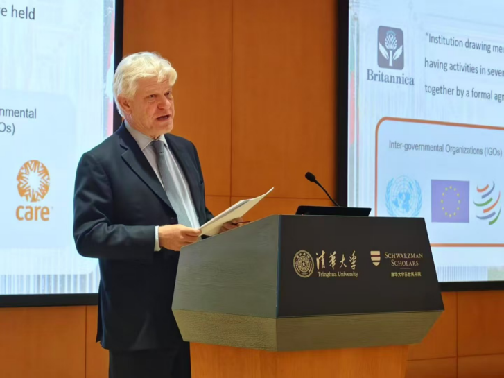
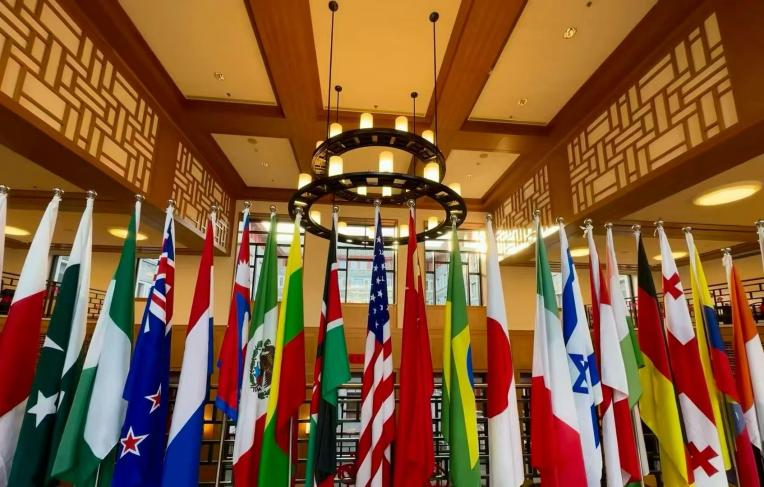
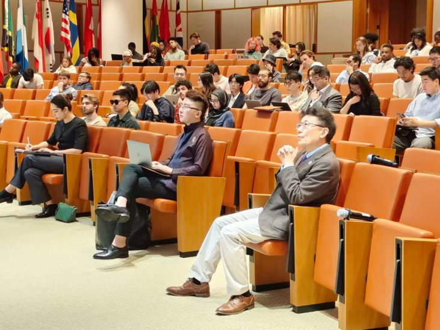

GYDA Senior Advisor Reflects on International Organizations: Past, Present, and Future at Tsinghua's Schwarzman College

Location
Schwarzman College, Tsinghua University, Beijing
Date
March 30, 2026
Beijing, 30 March 2026 — Fabrizio Hochschild, Senior Advisor to the Global Youth Development Alliance (GYDA) and former Under-Secretary-General of the United Nations, delivered a thought-provoking keynote at Schwarzman College, Tsinghua University, examining the history, achievements, and enduring challenges of international organizations.
The lecture, attended by scholars, students, and policy practitioners, blended historical insight with forward-looking analysis—offering both a tribute to multilateralism’s past and a candid assessment of its future.
From Vienna 1819 to Today: The Evolution of Global Governance
Opening with Jean-Baptiste Isabey's 1819 painting The Congress of Vienna, Mr. Hochschild framed the modern multilateral system as humanity's long-term experiment in shared problem-solving. "That gathering marked the birth of contemporary international cooperation," he observed.
"Two centuries later, we must ask: have our institutions kept pace with a world that is more connected—and more divided—than ever?"
He grounded the discussion in hard numbers, detailing the UN's four main expenditure pillars in 2024:
- Peace and Security – $27.23B
- Humanitarian Aid – $20.15B
- Sustainable Development – $8.75B
- Specialized Assistance & Human Rights – $8.79B
"These figures represent our collective attempt to address challenges that transcend borders—challenges no single country can solve alone."
The Invisible Architecture of Daily Life
A central theme of the address was the often-overlooked role of international organizations in setting global standards that shape our everyday lives.
From the International Labour Organization (ILO) protecting workers’ rights, to the International Civil Aviation Organization (ICAO) ensuring flight safety, to the World Health Organization (WHO) issuing evidence-based health guidelines—these bodies create the “invisible architecture” of a functioning global society.
“These norms are not abstractions,” Mr. Hochschild stressed. “They are what allow us to board a plane with confidence, work in fair conditions, and access quality healthcare. They are the quiet foundation of a predictable, rights-based world.”
Facing the Realities: Polarization, Underfunding, and a Trust Deficit

Mr. Hochschild did not shy away from the systemic pressures facing multilateral institutions today: deepening geopolitical fractures, chronic financial shortfalls, bureaucratic inertia, and declining public trust.
Quoting Winston Churchill, he reminded the audience that international organizations must be “a force for action, and not merely a frothing of words.”
“That warning remains urgently relevant,” he said. “Our institutions must prove their worth anew to a generation that is skeptical of grand promises but hungry for tangible solutions.”
Where Youth Fits In: Not Just Beneficiaries, but Architects

As GYDA’s Senior Advisor, Mr. Hochschild closed by highlighting the indispensable role of young people in reimagining global cooperation.
“Too often, youth are framed as passive beneficiaries of international action,” he noted. “In reality, they are its most creative architects—bringing fresh perspectives, digital fluency, and a palpable impatience with outdated ways of working.”
Through GYDA’s three flagship initiatives—Dream Maker, Future Decoder, and Signal Catcher—the organization is committed to ensuring that opportunity, knowledge, and innovation reach everyone, not just the privileged few.
“Our task is to listen, learn, and make space,” he concluded. “The future of international cooperation depends on it.”